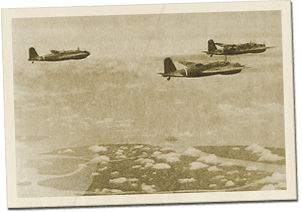

|
j
a v a s c r i p t |
January 18, 1942 — Sunday
Paul Meyer received a Red Cross card in Santo Tomas entitling him to breakfast and one hot meal a day. It seems that necessity is not a prerequisite for obtaining the card, because if anyone is being well cared for, it’s Paul. His note to Conchita asked for four packages of matches and several cartons of cigarettes and chocolate. Meanwhile, Santo Tomas is installing gas ranges for cooking, hoping to become self-sufficient soon. If it comes to pass, many on the outside would be relieved of a huge burden.

Japanese twin-engined bombers
over Malaya / Singapore The Japanese seem to be running wild in Malaya — a blitz. Plenty of air activity here today too: seven glistening, aluminium twin-engine bombers without a hint of camouflage were overhead all day. A drizzle in the afternoon didn't stop them from shuttling about. At 1700, KGEI on a new wavelength reported a large Japanese offensive on MacArthur’s right flank. Unlike previous occasions, they didn’t say the attack was stopped. |
|
|
|
|